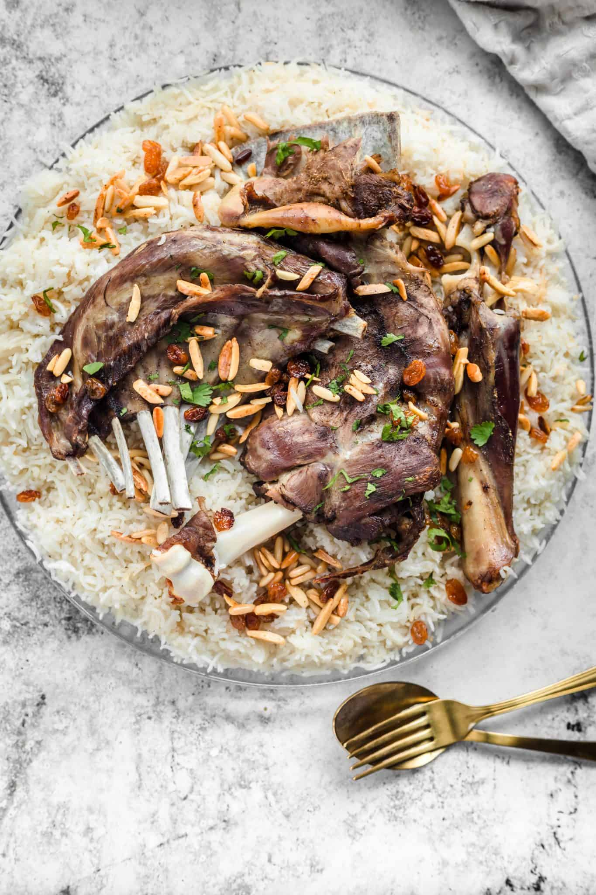

• The Food: The restaurant is highly regarded for its aromatic, long-grain basmati rice and tender, slow-cooked meats. Top options include Chicken and Mutton Mandi, alongside smoky variations like Al Faham and Peri-Peri Mandi.
• The Ambiance: It features a premium, luxurious Arabic-style indoor setup along with traditional floor-seating (Majlis) options.
• Pro-Tip: If you are dining in, try to secure a window seat to enjoy your meal with a scenic view overlooking the Calicut beach and the sea. Are you looking to find their complete menu, want to explore other top mandi spots around Calicut Beach, or looking for specific group dining options?
AlReem Mandi Menu & Prices
Mandi & Meat-Only Items
• Chicken Mandi (Meat Only): ₹140
• Masala Mandi (Meat Only): ₹150
• Honey Al Faham Mandi (Meat Only): ₹190
• Beef Mandi (Meat Only): ₹210
• Mutton Mandi (Meat Only): ₹410
Cuisine Types Offered
• Biryani
• Mughlai
• Arabic & Middle Eastern Specialties
• Kebabs
• South Indian dishes
location
